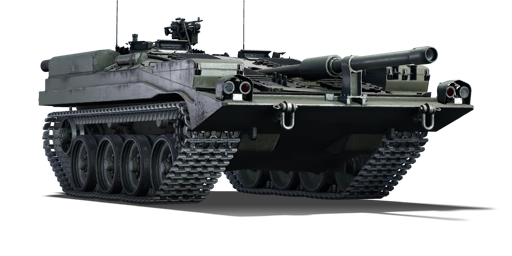

НАЗЕМНАЯ ТЕХНИКА / ШВЕЦИЯ
STRV 103A

ПРЕДПОЧИТАЕМАЯ МАШИНА КОМАНДИРА01 / 02
Машина, которой отведено особое место в ангаре. Низкий силуэт, узнаваемый профиль и безусловная верность шведской технике.
Зимняя сводка для командира. Проверка техники, координат на тактической карте и секретная новогодняя директива.
ВЫБЕРИ КВАДРАТ ДЛЯ РАЗВЕДКИ
ШВЕДСКАЯ ВЕТКА · ЛИЧНЫЙ СОСТАВ

Машина, которой отведено особое место в ангаре. Низкий силуэт, узнаваемый профиль и безусловная верность шведской технике.

Шведская БМП с 40-мм пушкой Bofors и тепловизором. Быстрая, точная и готова прикрыть командира в любой неожиданной ситуации.
ВЫДЕРЖКИ ИЗ ЛИЧНОГО ДЕЛА КОМАНДИРА
Командир flupiy сообщил о завершении игровой сессии. Через некоторое время система зафиксировала запуск следующего боя. Причина повторного продления операции остаётся неизвестной.
НАГРАДА: «ЕЩЁ ПЯТЬ МИНУТ»J29 Tunnan замечен в воздушном коридоре. Наземный персонал просит не забывать, что у союзника тоже есть желание участвовать в миссии.
НАГРАДА: «ВЕРНОСТЬ ШВЕЦИИ»DraWol направила запрос о совместной операции. Запрос требует внимания командира. Союзники не появляются в списке техники автоматически.
НАГРАДА: «СОЮЗНИК НА СВЯЗИ»Strv 103A снова заняла почётное место в оперативной сводке. Аналитический отдел пришёл к выводу, что спорить с командиром о любимой машине бесполезно.
НАГРАДА: «ЖЕЛЕЗНАЯ ВЫДЕРЖКА»ЗАЩИЩЁННЫЙ КАНАЛ · 02
ДОСТУП ПО СПЕЦИАЛЬНОМУ РАЗРЕШЕНИЮ
В архиве обнаружен документ, адресованный командиру flupiy. Содержимое скрыто до подтверждения допуска.
АДРЕСАТ: КОМАНДИРУ flupiy
УРОВЕНЬ ДОСТУПА: ОСОБО ВАЖНЫЙ
В связи с поступившими сведениями о чрезмерно продолжительных игровых сессиях и высокой концентрации внимания на шведской технике приказываю:
1. Не забывать о DraWol и своевременно приглашать её в совместные бои.
2. Не ставить очередной бой выше времени, которое можно провести вместе.
3. По возможности создавать новые общие воспоминания — не только на виртуальных полях сражений.
4. Помнить, что даже самому опытному командиру иногда нужен свой надёжный союзник.
ОСОБОЕ УКАЗАНИЕ: оставаться одной командой, даже когда миссии проходят на разных картах и в разных обстоятельствах.